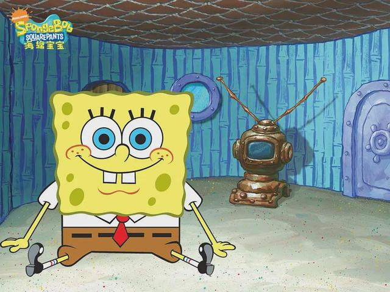
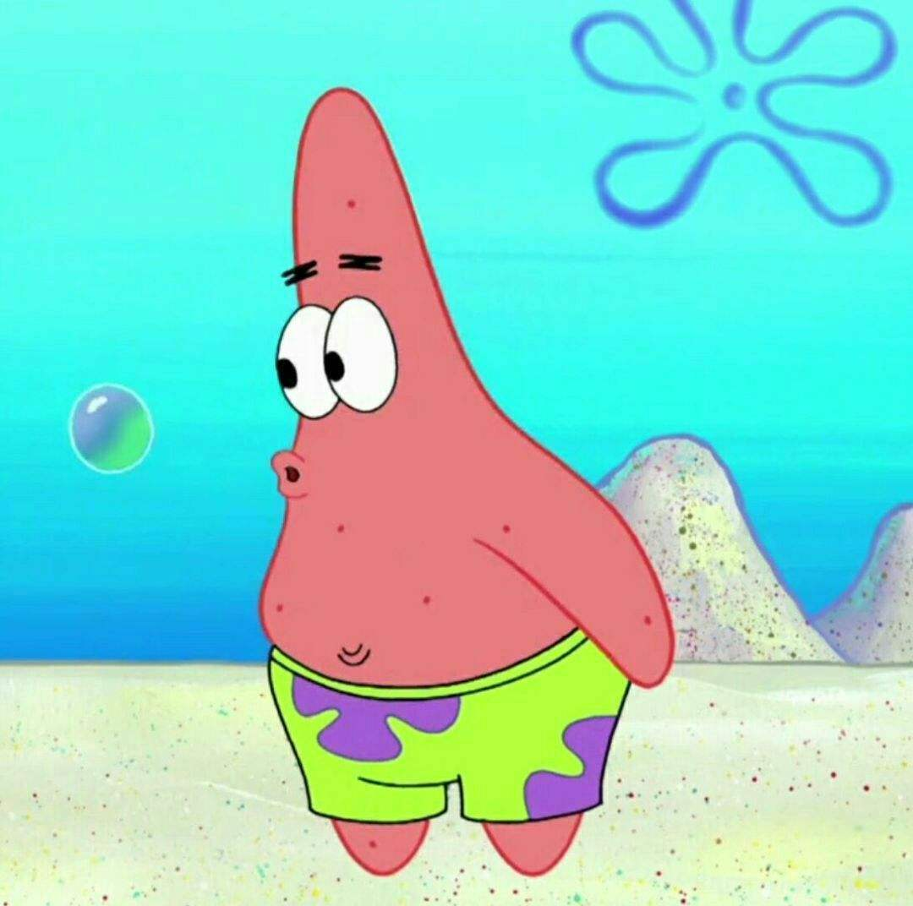
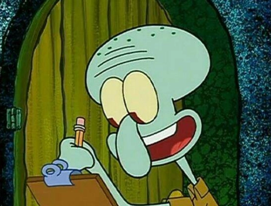
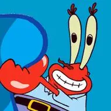
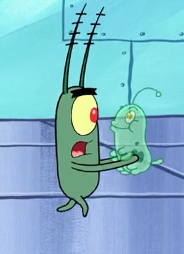
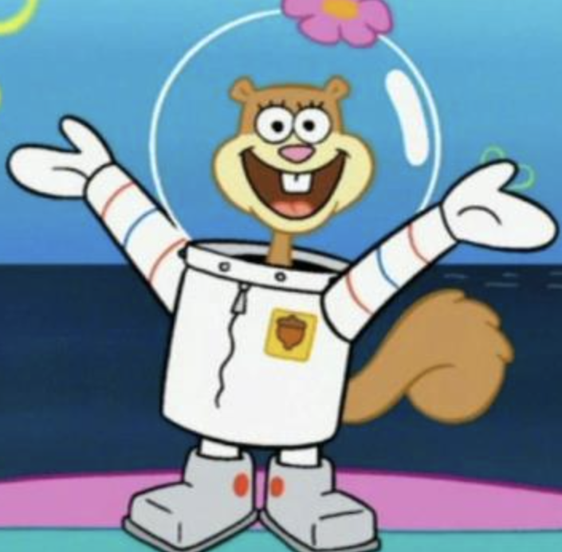
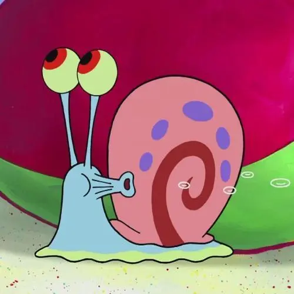
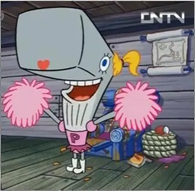

海绵宝宝
黄色方形海绵，乐观开朗，喜欢捕捉水母和吹泡泡，蟹堡王餐厅的主厨。

派大星
粉红海星，海绵宝宝最好的朋友，傻气天真，喜欢发呆和吃冰淇淋。

章鱼哥
蓝色章鱼，海绵宝宝和派大星的邻居兼同事，傲慢自恋，喜欢吹奏竖笛和画自画像。

蟹老板
红色螃蟹，蟹堡王餐厅的老板，视钱如命，小气，有一个抹香鲸女儿珍珍。

痞老板
绿色浮游生物，只有一只眼睛，是蟹老板的死对头，海之霸餐厅的老板，一直试图偷取蟹堡王的秘方。

珊迪
一只来自德克萨斯州的松鼠，穿着潜水服，在一个充满空气的圆顶里住着，是科学家、探险家和发明家，喜欢运动和科学。

小蜗
一只海蜗牛，海绵宝宝的宠物，会像猫一样叫。

珍珍
一只青少年抹香鲸，蟹老板的女儿。